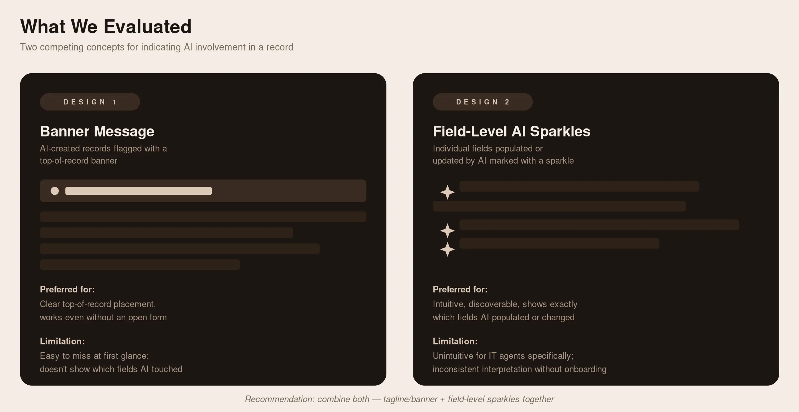

Overview
Two linked rounds of research, 1:1 interviews and concept-testing workshops, evaluating how well AI Processing, Citation, and AI-indicator design patterns communicated trust, status, and control to agents working inside AI-assisted workflows.
- Role
- Sr. UX Researcher, Platform UX
- Context
- Conducted for a large enterprise SaaS platform's Platform UX team, evaluating AI design patterns in UI16 and Workspaces
- Methods
- 1:1 interviews, concept-testing workshops, Figma prototype evaluation, live-instance testing
- Timeline
- Two research rounds: a workshop-based concept test (Aug 13-20) and a follow-up round of 1:1 interviews on AI Processing and Citations (Oct 28-Dec 12)
Context
AI-powered experiences were new to these customers, and every interaction where AI touched a workflow, creating a record, updating a field, generating a citation, was a moment where trust could be built or broken. Getting these interaction patterns right mattered disproportionately because they'd become the default patterns applied platform-wide, not just in one feature. This research existed to answer a specific, practical question before that platform-wide rollout: were the AI-prioritized designs and concepts actually intuitive, clear, and suitable for conveying AI workflows to the different fulfiller personas (CSM agents and IT agents) who'd be using them daily.
Why this research mattered:
- Scalability: platform-wide consistency ensures the patterns work across diverse workflows, not just the one they were designed against
- Impact measurement: evaluating these patterns helps quantify adoption, usability, and ROI before wider rollout
- Design evolution: insights from pattern evaluation guide future AI UX improvements
- Surfacing future customer expectations: determining scalability and clarity of AI workflows across fulfiller personas going forward
Research Rigor & Approach
Research Goals
Determine whether AI-prioritized designs and concepts were intuitive, clear, and suitable for conveying AI workflows to different fulfiller personas.
Key research questions:
- Do users understand where AI "sits" or is embedded on-screen?
- Do users have trust in the AI system?
- Would you prefer more details here, or does this high-level message work for you?
- How visible or noticeable is this to you?
- Is there anything unappealing or confusing?
- How can we simplify or improve upon this recommendation?
Target Respondents & Sample
Round 1 (concept-testing workshops): 8 customers across CSM Agent and IT Agent departments (4 CSM Agents, 4 IT Agents), run as two 90-minute workshop sessions (Workshop 1 and Workshop 2). Participating organizations included Southern California Edison, Medicare, HP, TIAA (IT Agent roles) and Second Nature, Concentrix, Federal Reserve, Sage South Africa (CSM Agent roles).
Round 2 (1:1 interviews): 6 customers (3 CSM Agents, 3 IT Agents), 75-minute 1:1 interview sessions.
Both rounds deliberately split recruiting across the two personas rather than treating "agent" as one undifferentiated group, since CSM and IT agents interact with AI-generated content in different workflows and under different urgency/compliance constraints.
What We Evaluated

Two competing design concepts for indicating AI involvement in a record:
Design 1: A new record created by AI is indicated via a banner message
Design 2: A new record, or fields updated by AI, are indicated via field-level "AI sparkles,"
AI sparkles in the list indicate a record was created by AI; a banner message to indicate it was AI-generated; field-level sparkles
Also evaluated: AI Processing and Citation patterns inside UI16 and Workspaces, specifically discoverability of the AI Hub icon and workflow feature, placement of AI workflows on the record page versus the side panel, the show/hide steps toggle for AI-generated workflow steps, card-based workflow interfaces, citation indicator visual prominence, and highlight-animation styles for source verification.
What We Found
- Discoverability was the dominant failure mode, especially for anything genuinely new.
Citations, a more familiar concept, fared better; AI Processing (AI Hub icon, side panel, pop-over messages) was frequently missed entirely without prompting. Recommendation: lean on prominent visual indicators and the mental models users already have from consumer AI tools. - Placement and layout have to match existing mental models, not just be technically available.
Record-page embedding beat side-panel placement because it matched users' vertical-scroll habits; field-level AI sparkles were intuitive once seen, but only when shown immediately, not after a save action. Recommendation: default to placement patterns users already know, and surface indicators at first view, not after an interaction. - Terminology and labeling were a recurring, cross-cutting source of confusion.
"Created" vs. "updated" was consistently misread as a priority signal; color choices (like green) collided with existing status meanings elsewhere in the platform. Recommendation: standardize terminology and color use across all AI features, not per-feature. - Trust requires visible reasoning, confidence, and a human checkpoint, especially for high-stakes cases.
Users wanted to know why AI failed, how confident it was, and to retain final control over critical or security-sensitive actions, tickets should not be auto-assigned by AI without notification. This "show your work" principle was the single most consistent theme across every session. Recommendation: build in confidence indicators, failure explanations, and configurable human-review checkpoints as core design principles, not edge-case handling. - Progressive disclosure was the preferred interaction pattern across every feature tested.
A brief preview by default, with the option to expand into full detail or source, worked better than either an always-collapsed or always-expanded view. Recommendation: apply one consistent three-level disclosure pattern (preview → expanded → full source/view) platform-wide.
The condensed version above is what should carry the narrative on the case study page. I removed the granular per-round breakdown (specific findings like the show/hide toggle confusion, card-based interface scoping, border-fill animation preference, and the individual "n of 6" participant ratios) rather than moving it anywhere, so if you want that level of detail available for a live follow-up question, let me know and I'll add it back as a separate appendix section instead of folding it into the main narrative.
The Role of AI (framing that came out of this research)
Two distinct roles emerged for how agents wanted AI to function, useful framing for how findings above should be applied going forward:
Automate repetitive and tedious tasks:
AI helping with simple password resets or account lockouts, making work easier and helping summarize tickets better, delivering fast and seamless customer support, and handling repetitive tasks like summarizing tickets, drafting responses, and flagging issues.
AI as an assistant, not a source of truth:
A personalized assistant based on agent interactions, deeply integrated into daily workflows, used as a collaborator rather than a source of truth, and used to help reduce knowledge or level-1 questions in a reliable, easy-to-use manner.
Impact
This research's recommendations, progressive disclosure (brief preview, expanded detail, full source view), field-level AI indication, consistent AI-action controls, and human-in-the-loop checkpoints for high-stakes cases, were incorporated directly into shipped components as part of the AI-native experience project, the company's single biggest platform initiative of 2026. Rather than landing as one-off design tweaks in a single feature, the research-informed patterns were built as reusable components and published to the design library, making them available for other Business Units to adopt immediately following the research and subsequent iterations, not gated behind a separate future release cycle. The findings became the platform's default way of representing AI involvement, trust, and control, available for any team building an AI-touching workflow to use out of the box, and specific UI16/Workspaces instances of that work shipped into the Zurich and Australia release trains.